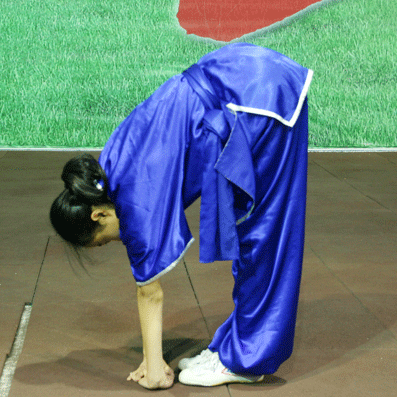

<!DOCTYPE HTML>
<html lang="en">
    <head>
        <meta charset="UTF-8">
        <title>智能 - </title>
        <meta content="text/html; charset=utf-8" http-equiv="Content-Type">
        <meta name="description" content="">
        <meta name="viewport" content="width=device-width, initial-scale=1">

        <base href="">

        <link rel="stylesheet" href="book.css">
        <link href="https://fonts.googleapis.com/css?family=Open+Sans:300italic,400italic,600italic,700italic,800italic,400,300,600,700,800" rel="stylesheet" type="text/css">
        <link href="https://fonts.googleapis.com/css?family=Source+Code+Pro:500" rel="stylesheet" type="text/css">

        <link rel="shortcut icon" href="favicon.png">

        <!-- Font Awesome -->
        <link rel="stylesheet" href="https://maxcdn.bootstrapcdn.com/font-awesome/4.3.0/css/font-awesome.min.css">

        <link rel="stylesheet" href="highlight.css">
        <link rel="stylesheet" href="tomorrow-night.css">

        <!-- MathJax -->
        <script type="text/javascript" src="https://cdnjs.cloudflare.com/ajax/libs/mathjax/2.7.1/MathJax.js?config=TeX-AMS-MML_HTMLorMML"></script>

        <!-- Fetch JQuery from CDN but have a local fallback -->
        <script src="https://code.jquery.com/jquery-2.1.4.min.js"></script>
        <script>
            if (typeof jQuery == 'undefined') {
                document.write(unescape("%3Cscript src='jquery.js'%3E%3C/script%3E"));
            }
        </script>
    </head>
    <body class="light">
        <!-- Set the theme before any content is loaded, prevents flash -->
        <script type="text/javascript">
            var theme = localStorage.getItem('theme');
            if (theme == null) { theme = 'light'; }
            $('body').removeClass().addClass(theme);
        </script>

        <!-- Hide / unhide sidebar before it is displayed -->
        <script type="text/javascript">
            var sidebar = localStorage.getItem('sidebar');
            if (sidebar === "hidden") { $("html").addClass("sidebar-hidden") }
            else if (sidebar === "visible") { $("html").addClass("sidebar-visible") }
        </script>

        <div id="sidebar" class="sidebar">
            <ul class="chapter"><li><a href="./life.html"><strong>1.</strong> 人生</a></li><li><a href="./happy.html"><strong>2.</strong> 幸福</a></li><li><a href="./meaning.html"><strong>3.</strong> 意义</a></li><li><a href="./belief.html"><strong>4.</strong> 信念</a></li><li><a href="./success.html"><strong>5.</strong> 成功</a></li><li><a href="./mind.html"><strong>6.</strong> 思维</a></li><li><a href="./learn.html"><strong>7.</strong> 学习</a></li><li><a href="./health.html"><strong>8.</strong> 健身</a></li><li><a href="./finance.html"><strong>9.</strong> 理财</a></li><li><a href="./science.html"><strong>10.</strong> 科学</a></li><li><a href="./intelligence.html"><strong>11.</strong> 智能</a></li></ul>
        </div>

        <div id="page-wrapper" class="page-wrapper">

            <div class="page">
                <div id="menu-bar" class="menu-bar">
                    <div class="left-buttons">
                        <i id="sidebar-toggle" class="fa fa-bars"></i>
                        <i id="theme-toggle" class="fa fa-paint-brush"></i>
                    </div>

                    <h1 class="menu-title"></h1>

                    <div class="right-buttons">
                        <i id="print-button" class="fa fa-print" title="Print this book"></i>
                    </div>
                </div>

                <div id="content" class="content">
                    <a class="header" href="print.html#the-four-stages-of-life-人生的四个阶段" id="the-four-stages-of-life-人生的四个阶段"><h1>THE FOUR STAGES OF LIFE 人生的四个阶段</h1></a>
<a class="header" href="print.html#stage-one-mimicry-模仿阶段" id="stage-one-mimicry-模仿阶段"><h2>STAGE ONE: MIMICRY 模仿阶段</h2></a>
<p><strong>In Stage One, we learn to fit in with the people and culture around us.</strong>
The goal of Stage One is to teach us how to function within society so that we can be autonomous, self-sufficient adults.</p>
<p>As children, the way we’re wired to learn is by watching and mimicking others.
First we learn to do physical skills like walk and talk.
Then we develop social skills by watching and mimicking our peers around us.
Then, finally, in late childhood, we learn to adapt to our culture by observing the rules and norms around us and trying to behave in such a way that is generally considered acceptable by society.</p>
<p>In Stage One, a person is wholly dependent on other people’s actions and approval to be happy.
This is a horrible strategy because other people are unpredictable and unreliable.</p>
<a class="header" href="print.html#stage-two-self-discovery-自我发现阶段" id="stage-two-self-discovery-自我发现阶段"><h2>STAGE TWO: SELF-DISCOVERY 自我发现阶段</h2></a>
<p><strong>Stage Two is about learning what makes us different from the people and culture around us.</strong>
Stage Two requires us to begin making decisions for ourselves, to test ourselves, and to understand ourselves and what makes us unique.</p>
<p>Stage Two involves a lot of trial-and-error and experimentation. We experiment with living in new places, hanging out with new people, imbibing new substances, and playing with new people’s orifices.
At some point we all must admit the inevitable: life is short, not all of our dreams can come true, so we should carefully pick and choose what we have the best shot at and commit to it.</p>
<p>In Stage Two, one becomes reliant on oneself, but they’re still reliant on external success to be happy — making money, accolades, victory, conquests, etc.
These are more controllable than other people, but they are still mostly unpredictable in the long-run.</p>
<a class="header" href="print.html#stage-three-commitment-自我实现阶段" id="stage-three-commitment-自我实现阶段"><h2>STAGE THREE: COMMITMENT 自我实现阶段</h2></a>
<p>Stage Three is the great consolidation of one’s life. Stage Three is all about maximizing your own potential in this life.</p>
<p>It’s all about building your legacy. What will you leave behind when you’re gone? What will people remember you by?
Whether that’s a breakthrough study or an amazing new product or an adoring family, <strong>Stage Three is about leaving the world a little bit different than the way you found it.</strong></p>
<p>Stage Three relies on a handful of relationships and endeavors that proved themselves resilient and worthwhile through Stage Two. These are more reliable.</p>
<a class="header" href="print.html#stage-four-legacy-遗产保护阶段" id="stage-four-legacy-遗产保护阶段"><h2>STAGE FOUR: LEGACY 遗产保护阶段</h2></a>
<p>People arrive into Stage Four having spent somewhere around half a century investing themselves in what they believed was meaningful and important.</p>
<p>They did great things, worked hard, earned everything they have, maybe started a family or a charity or a political or cultural revolution or two, and now they’re done.
They’ve reached the age where their energy and circumstances no longer allow them to pursue their purpose any further.
The goal of Stage Four then becomes not to create a legacy as much as simply making sure that legacy lasts beyond one’s death.</p>
<p>As humans, we have a deep need to feel as though our lives mean something.
This meaning we constantly search for is literally our only psychological defense against the incomprehensibility of this life and the inevitability of our own death.</p>
<p><strong>Stage Four requires we only hold on to what we’ve already accomplished as long as possible.</strong></p>
<a class="header" href="print.html#how-to-enter-the-next-stage-怎样进入下一个阶段" id="how-to-enter-the-next-stage-怎样进入下一个阶段"><h2>How To Enter The Next Stage 怎样进入下一个阶段</h2></a>
<p>The same thing gets us stuck at every stage: a sense of personal inadequacy.</p>
<p>The solution at each stage is then backwards. To move beyond Stage One, you must accept that you will never be enough for everybody all the time, and therefore you must make decisions for yourself.</p>
<p>To move beyond Stage Two, you must accept that you will never be capable of accomplishing everything you can dream and desire, and therefore you must zero in on what matters most and commit to it.</p>
<p>To move beyond Stage Three, you must realize that time and energy are limited, and therefore you must refocus your attention to helping others take over the meaningful projects you began.</p>
<p>To move beyond Stage Four, you must realize that change is inevitable, and that the influence of one person, no matter how great, no matter how powerful, no matter how meaningful, will eventually dissipate too.</p>
<p>And life will go on.</p>
<p>At each subsequent stage, happiness becomes based more on internal, controllable values and less on the externalities of the ever-changing outside world. Later stages don’t replace previous stages. They transcend them.</p>
<p>Stage Two people still care about social approval. They just care about something more than social approval.</p>
<p>Stage Three people still care about testing their limits. They just care more about the commitments they’ve made.</p>
<p><strong>Each stage represents a reshuffling of one’s life priorities.</strong></p>
<a class="header" href="print.html#the-four-types-of-happy-lives-幸福的四个层次" id="the-four-types-of-happy-lives-幸福的四个层次"><h1>The Four Types Of Happy Lives 幸福的四个层次</h1></a>
<p>There are four types of happy lives, the lives get better — but more challenging.</p>
<a class="header" href="print.html#happy-life-1-the-pleasant-life-愉快的生活" id="happy-life-1-the-pleasant-life-愉快的生活"><h2>Happy Life #1: The Pleasant Life 愉快的生活</h2></a>
<blockquote>
<p>A life that successfully pursues the positive emotions about the present, past and future.</p>
</blockquote>
<p>The goal is life as one long vacation. You want as many positive feelings and bodily pleasures as you can. Tasty food, aesthetic feeling, smiles, massages, and laughs. No regrets, no worries, and a head full of positive thoughts.</p>
<p>Research shows that often you don’t actually do what you enjoy the most — you do what is easiest. So you need to schedule pleasurable things.</p>
<a class="header" href="print.html#happy-life-2-the-good-life-美好的生活" id="happy-life-2-the-good-life-美好的生活"><h2>Happy Life #2: The Good Life 美好的生活</h2></a>
<blockquote>
<p>Using your signature strengths to obtain abundant gratification in the main realms of your life.</p>
</blockquote>
<p>Actively doing stuff you’re good at and getting lost in it. Trying to improve your skills. Accomplishing goals and trying to achieve “flow” as much as possible.
Flow is when you’re working at something and you’re in the zone, not noticing the passage of time because you’re caught up in the activity.</p>
<p>While The Pleasant Life is all about feeling, The Good Life is focused on doing.
And much like The Pleasant Life, The Good Life can still be meaningless. Video games are great at creating flow and devoting yourself to becoming the best player of a game.</p>
<a class="header" href="print.html#happy-life-3-the-meaningful-life-有意义的生活" id="happy-life-3-the-meaningful-life-有意义的生活"><h2>Happy Life #3: The Meaningful Life 有意义的生活</h2></a>
<blockquote>
<p>Using your signature strengths and virtues in service of something larger than you are.</p>
</blockquote>
<p>The Meaningful Life is The Good Life — but you’re using your signature strengths in a way that benefits others as well as yourself.</p>
<p>Work of expert quality that benefits the broader society consistently exhibit high levels of job satisfaction.</p>
<p>You have to care to have meaning in your life. And that’s going to mean occasional un-pleasant feelings: Meaningful involvements increase one’s stress, worries, arguments, and anxiety, which reduce happiness.</p>
<a class="header" href="print.html#happy-life-4-the-full-life-完整的生活" id="happy-life-4-the-full-life-完整的生活"><h2>Happy Life #4: The Full Life 完整的生活</h2></a>
<blockquote>
<p>Take all of the previous three in moderation and you have The Full Life.</p>
</blockquote>
<p>A full life consists in experiencing positive emotions about the past and future, savoring positive feelings from the pleasures,
deriving abundant gratification from your signature strengths, and using these strengths in the service of something larger to obtain meaning.</p>
<p>It requires you deeply committed to lifelong goals and ambitions. It can be a lot to juggle. It’s tricky to stay consistent. You have to find a balance that works for you.
But as the happiest people in the world know: it’s worth it.</p>
<a class="header" href="print.html#the-meaning-of-life-人生的意义" id="the-meaning-of-life-人生的意义"><h1>The Meaning Of Life 人生的意义</h1></a>
<a class="header" href="print.html#为什么要过有意义的人生" id="为什么要过有意义的人生"><h2>为什么要过有意义的人生？</h2></a>
<p>You don’t become happy by pursuing happiness. You become happy by living a life that means something. </p>
<p>People commit suicide not because they’re unhappy but because they lack meaning.
Kids are really expensive and don’t make parents happier, but children bring enormous meaning to people’s lives.</p>
<p>The happy feelings faded fast. Over the long term, pursuing meaning actually boosted psychological health.</p>
<p>Today, right now, is the best time ever to choose to do something that truly matters. Something meaningful to you. That ONE thing that makes you create value that means a lot to you. Something you alone can share with the rest of us.</p>
<p>Pursuing meaning makes you feel good about yourself, because you are pursuing something bigger than yourself.</p>
<a class="header" href="print.html#怎样让人生变得有意义" id="怎样让人生变得有意义"><h2>怎样让人生变得有意义？</h2></a>
<p>You won’t discover your life’s work by wondering or worrying about it. And it doesn’t come fully formed. You’ll discover it by taking action, everyday.
By looking at what is working and what isn’t, you can align yourself with your why and what or the passion and purpose for your life.</p>
<ol>
<li><strong>Belonging</strong>. 归属感</li>
</ol>
<p>Quickest way to add meaning to your life is to belong to a group.</p>
<p>People with the happiest lives were “takers.” But those with the most meaningful lives were “givers.”
As we saw, happiness isn’t everything. Parenthood is the ultimate form of giving. And givers lead meaningful lives.</p>
<ol start="2">
<li><strong>Purpose</strong>. 目的性</li>
</ol>
<p>Purpose is less about what you do and more about how you see what you do.</p>
<p>One of the best ways to derive fulfilment as an employee is to work on projects you initiate. Something you are responsible for.
If you can take more initiates and implement a lot of your own ideas, instead of reacting to actions others expect of you, your chances of finding fulfilment could double.</p>
<p>You need something that motivates you and that you can organize your actions around.
How can you redefine your role at work to find more meaning? What’s a bigger goal it contributes to? How does it better the lives of others?</p>
<p>WHY you pursue something is as equally important as WHAT you pursue.
Purpose eases the pain of the long hours and gives you the fortitude to fail. It makes menial tasks meaningful and even fulfilling.</p>
<p>Finding (and doing) what makes you come alive changes everything.
Pursue something so important that even if you fail, the world is better off with you having tried.</p>
<ol start="3">
<li><strong>Storytelling</strong>. 叙事性</li>
</ol>
<p>You have a story you tell yourself about your life — whether you realize it or not.</p>
<p>Human brain is wired for stories. It’s how you make sense of the world.
Narrative identity as an internalized story you create about yourself — your own personal myth.
In redemption stories, the protagonists move from suffering to salvation — they experience a negative event followed by a positive event that resulted from the negative event and therefore gives their suffering some meaning.</p>
<p>You rarely get to change the world, but you can change your internal story.
Beyond stories of redemption, people who believe their lives are meaningful tend to tell stories defined by growth, communion and agency.</p>
<p>Try to divide your live into chapters and to recount key scenes, such as a high point, a low point, a turning point or an early memory.
Try think about personal beliefs and values and to reflect on your story’s central theme.</p>
<p>A psychotherapist’s job is to work with patients to rewrite their stories in a more positive way.
Even making smaller story edits to our personal narratives can have a big impact on our lives.</p>
<ol start="4">
<li><strong>Transcendence</strong>. 超越感</li>
</ol>
<p>Awe Nature and Love Life.</p>
<p>Sometimes life feels so small. You’re all-in on that one thing and now that thing is gone. It’s absolutely crushing.
But there are experiences that provide that feeling of just how big and amazing life is. The secret is a little word with big impact: awe.
Get out in nature and nature makes your big problems seem tiny.
Looking at the night sky, bright stars who don't admire infinite universe? however, only the wise man fearing the true God who created the universe.</p>
<p>Life can be hard. But remember, while the difficult moments may decrease happiness, they’re essential for building meaning. And that’s what matters in the long run.</p>
<a class="header" href="print.html#信念" id="信念"><h1>信念</h1></a>
<a class="header" href="print.html#be-your-best-self-做最好的自己" id="be-your-best-self-做最好的自己"><h2>Be your best self. 做最好的自己</h2></a>
<p>Be yourself; no base imitator of another, but your best self. There is something which you can do better than another.
Listen to the inward voice and bravely obey that. Do the things at which you are great, not what you were never made for.</p>
<p>Something you are happy to do without hesitation. Skills that are unique to you.
Skills you can only learn by doing; by learning how to fly after jumping off the cliff.</p>
<p>Invest in yourself, it’s the best investment you can ever make. Create a bigger version of yourself.
There is something about you that can be explored and developed to your benefit and the rest of the world.
The real world rewards those who get stuff done!</p>
<p>You have decided to ignore everybody and focus on building the life you deeply care about.
Don’t be afraid to expose your authentic self to the world, be creative about what you do.
Show your work. Don’t be afraid to show others what you are capable of.
Become immune to the impact of others’ opinion and stand naked in a crowd of ideas; comfortable in knowing that while others married the mundane, you explored the exceptional.</p>
<a class="header" href="print.html#your-thoughts-decide-your-future-你的想法决定你的未来" id="your-thoughts-decide-your-future-你的想法决定你的未来"><h2>Your thoughts decide your future. 你的想法决定你的未来</h2></a>
<p>We attract into our lives by what we think and believe.
Writing out you are being who you want to be, which will then inform what you do and ultimately who you become.</p>
<p>No matter where you are right now, you can have any future you want.
Create the highest, grandest vision possible for your life, because you become what you believe.
Mental creation always precedes physical creation. The blueprint you design in your head becomes the life you build.</p>
<a class="header" href="print.html#assume-nothing-but-question-everything-怀疑一切" id="assume-nothing-but-question-everything-怀疑一切"><h2>Assume nothing but question everything. 怀疑一切</h2></a>
<p>You desperate for knowledge or information that can be used to improve or create something.
While others waste time, you rather learn how to create, build or design something.
You are hungry to make a difference or do something significant.</p>
<a class="header" href="print.html#dont-invest-in-a-career-build-a-life-创造属于自己的人生" id="dont-invest-in-a-career-build-a-life-创造属于自己的人生"><h2>Don’t invest in a career. Build a life. 创造属于自己的人生</h2></a>
<p>The way we work keeps changing. Robots are eating jobs. People are scared of losing their jobs. Nobody is safe.
It’s easier to transform your passion into your job than finding a job that matches your what you love to do.
Do something interesting, meaningful, different, amazing and truly remarkable. Show your most amazing work to the world.</p>
<a class="header" href="print.html#take-your-dreams-seriously-认真对待你的梦想" id="take-your-dreams-seriously-认真对待你的梦想"><h2>Take your dreams seriously. 认真对待你的梦想</h2></a>
<p>If you pursue your dreams long enough, compounding takes effect. Momentum will surge. Don’t give up just yet.
For centuries we’ve been trained by the system to stop thinking and do as we are told.
But dreamers and thinkers are changing the world as we know it.</p>
<a class="header" href="print.html#nothing-is-impossible-一切皆有可能" id="nothing-is-impossible-一切皆有可能"><h2>Nothing is impossible. 一切皆有可能</h2></a>
<p>You need to aim beyond what you are capable of.
You need to develop a complete disregard for where your abilities end.
Make your vision of where you want to be a reality.</p>
<a class="header" href="print.html#becoming-successful-走向成功" id="becoming-successful-走向成功"><h1>Becoming Successful 走向成功</h1></a>
<p>Don’t aim at success. The more you aim at it and make it a target, the more you are going to miss it.
For success, like happiness, cannot be pursued; it must ensue, you have to let it happen by not caring about it.
I want you to listen to what your conscience commands you to do and go on to carry it out to the best of your knowledge.
Then you will live to see that in the long-run, success will follow you precisely because you had forgotten to think about it.</p>
<p>I know so many people who chase whatever worked for other people.
Those who are going to succeed will decide what they want to do regardless of what everyone else says or thinks about it.</p>
<a class="header" href="print.html#believe-in-life-long-learning-终身学习" id="believe-in-life-long-learning-终身学习"><h2>Believe in life-long learning. 终身学习</h2></a>
<p>One of the best ways to gain knowledge and be better is self-education.
As long as you are genuinely interested in the topic, don’t stop.
Lifelong learning will get most of your questions answered.
Make the most of your time and improve yourself every day.</p>
<p>The ability to expand your mind and strive for lifelong learning is more critical to your success than you think.
Every skill you acquire doubles your odds of success. 
Begin to plant seeds every day that will yield the best and most fulfilling life now and in the future.</p>
<p>Research has proven that more than ever before, a challenged, stimulated brain may well be the key to a vibrant later life.
Studies have found that learning throughout our lives can improve self-esteem and increase life-satisfaction, optimism and belief in our own abilities.</p>
<a class="header" href="print.html#leverage-your-position-立足现状" id="leverage-your-position-立足现状"><h2>Leverage Your Position. 立足现状</h2></a>
<p>There are people you already know who have information you need.
There are people you already know who have capital you can use.
There are people you already know who can connect you with people you should know.
Instead of wanting more, how about you utilize what you already have? Until you do, more won’t help you.</p>
<p>Success is based on having and maintaining a motivation worth fighting for.
It’s based on believing what others might call a fantasy.
It’s based on leveraging your position and maintaining the momentum of every step you take.</p>
<a class="header" href="print.html#begin-with-the-end-clearly-in-mind-以终为始" id="begin-with-the-end-clearly-in-mind-以终为始"><h2>Begin with the end clearly in mind. 以终为始</h2></a>
<p>People may spend their whole lives climbing the ladder of success only to find, once they reach the top, that the ladder is leaning against the wrong wall.</p>
<p>Too many people are playing the wrong game. It’s how you ruin your life without even knowing it.
More important than playing “the game” is how the game is set up. How you set up the game determines how you play. And it’s better to win first, then play.</p>
<p>Start from the end and work backwards. Rather than thinking about what’s plausible, or what’s expected, or what makes sense — start with what you want.</p>
<a class="header" href="print.html#dont-wait-to-start-立即行动" id="dont-wait-to-start-立即行动"><h2>Don’t Wait To Start. 立即行动</h2></a>
<p>You qualify yourself by showing up and working. You get permission by deciding.</p>
<p>Life is short. Don’t wait for tomorrow for something you could do today.</p>
<a class="header" href="print.html#take-one-step-at-a-time-走一步看一步" id="take-one-step-at-a-time-走一步看一步"><h2>Take one step at a time. 走一步看一步</h2></a>
<p>When you’re trying to accomplish something big, you have the why but rarely the how. The path to achieving your goals is far from obvious.
The emotional need for clarity and fear of the unknown leads people to abandon their dreams for more straightforward pursuits.
However you don't need to have “it all” figured it. You need clarity on the next step or two.
When you get to the next step, you’ll be able to ask better questions.</p>
<a class="header" href="print.html#create-as-you-see-fit-以自己的方式做事" id="create-as-you-see-fit-以自己的方式做事"><h2>Create As You See Fit. 以自己的方式做事</h2></a>
<p>There is no right or wrong way. Rather, it’s about doing things your way.
You’ll emerge with your own voice and original work. You’ll be less troubled about how your work is received and more focused on creating something you believe in.</p>
<a class="header" href="print.html#dont-fear-to-break-convention-敢于打破常规" id="dont-fear-to-break-convention-敢于打破常规"><h2>Don’t Fear To Break Convention. 敢于打破常规</h2></a>
<p>Convention is where we’re at. Breaking convention is how we’ll evolve, which requires a gargantuan quantity of failure.</p>
<p>Failure is feedback. Failure is moving forward. It’s conscious and exerted effort toward something you’ve never done before. It’s incredible.</p>
<a class="header" href="print.html#never-forget-where-you-came-from-不忘根本" id="never-forget-where-you-came-from-不忘根本"><h2>Never Forget Where You Came From. 不忘根本</h2></a>
<p>It’s easy to forget where you came from.
It’s easy to forget all the sacrifices other people have made to get you where you are.
Humility, gratitude, and recognition of your blessings keeps your success in proper perspective.</p>
<a class="header" href="print.html#no-one-succeeds-alone-没有人能独自成功" id="no-one-succeeds-alone-没有人能独自成功"><h2>No One Succeeds Alone. 没有人能独自成功</h2></a>
<p>&quot;Find Your Tribe&quot; — No matter how talented, how successful, how brilliant you are, just remember: Nobody wins alone.</p>
<p>You cannot be successful in a big way alone. You need help. You need an audience. It does not matter what your dream is.
You can only maximise your strengths and where you fall short, you need others’ strengths to create something truly amazing.
Nobody exists in a vacuum — and nobody succeeds in one either.</p>
<p>Pay very close attention to the people around you.
We don’t live and work in isolation, and when you can take advantage of the wisdom and even failings of those around you, the climb toward success is made that much easier.
Are you surrounding yourself with the right people? Are you putting yourself in the right environment? Are you getting inspired and challenged by the best people?
You can be the reason others receive inspiration. Show your best work every day!</p>
<a class="header" href="print.html#becoming-an-expert-the-elements-of-success-成为专家" id="becoming-an-expert-the-elements-of-success-成为专家"><h2>Becoming an Expert: The Elements of Success. 成为专家</h2></a>
<p>If you study the life and work trajectory of experts, two patterns seem to emerge.
One, they have specific backgrounds or opportunities, as mentioned above. Two, they put an incredible amount of time and effort into deliberate, effortful practice.</p>
<p>The best type of practice does two things:
1)It helps us to acquire the skills that speed up/automate processes and feedback.
2)It pushes us to the edge of our competence and forces us to focus. This is where the learning happens.</p>
<a class="header" href="print.html#it-takes-longer-than-you-think-to-succeed" id="it-takes-longer-than-you-think-to-succeed"><h2>It takes longer than you think to succeed.</h2></a>
<p>The overnight success is a myth.
Nothing worthwhile is going to be fast. Nor is building a business.
It takes longer than you think to adjust your product or service to the market’s needs and spread the word about your solution.</p>
<a class="header" href="print.html#great-ideas-require-great-teams" id="great-ideas-require-great-teams"><h2>Great ideas require great teams.</h2></a>
<p>No one has ever built great things alone.</p>
<p>Your brilliant idea is not worth a dime. In today’s competitive environment, no one cares about the ideas. Everyone has tons of them.</p>
<p>The only thing people care about is execution. They no longer want to listen to fancy presentations and pitches of your concept. They want to see its implementation instead.</p>
<p>However, when it comes to implementation, you are likely to face the natural constraints of own knowledge, ideas, skills, and time. Your idea requires a team to help you bring it to life.</p>
<p>Every huge thing is a product of efficient collaboration. Don’t try to prove it wrong. Nothing worthwhile has ever been built alone.</p>
<a class="header" href="print.html#dont-avoid-the-truth-embrace-it" id="dont-avoid-the-truth-embrace-it"><h2>Don’t avoid the truth. Embrace it.</h2></a>
<p>想要知道什么样的人的比较容易成功，我们绝对不能只看成功者，还要看那些不成功的人。
现在公认的几个能够区别成功人士和失败者的特质有如下几个，它们都是通过同时采样成功人士和不成功人士对比找到的：</p>
<ul>
<li>
<p>良好的家庭教育 (从统计意义上说，成功者的家教普遍良好而很多不成功者的家庭教育普遍缺失)</p>
</li>
<li>
<p>良好的判断力 (从统计意义上说，成功者在诸多关键点上判断正确而很多不成功者在关键地方选择错误)</p>
</li>
<li>
<p>良好的自控力 (从统计意义上说，成功者普遍具有较好的自控力而很多失败者自控力较差)</p>
</li>
<li>
<p>良好的人际关系 (从统计意义上说，成功者的人际关系要好于未成功者)，以及很重要的，</p>
</li>
<li>
<p>好运气 (成功者赶上了好时代，以及出乎意料的好运气，而很多失败者之所以失败，是运气不好而已)</p>
</li>
</ul>
<a class="header" href="print.html#心智模式" id="心智模式"><h2>心智模式</h2></a>
<p>我们看到的是自己想看到的世界，心智模式是一套大脑的内部程序。
我们按照自己过去的经验和记忆，处理我们看到的部分世界，然后在我们脑子里面构建一个自己的世界。这是我们大脑的工作原理。
即使生活在一模一样的世界的，我们对世界也会有完全不同的认识。正所谓“仁者见仁，智者见智”，“色即是空，空即是色”。</p>
<p>人们会变成自己觉得“应该成为”的人。
幸运儿反复印证自己的“幸运儿模式”，从而更加相信自己的“幸运世界”，而倒霉蛋则对自己的“倒霉世界”坚信不移。</p>
<p>我们为自己构建了一个世界，然后又反复强化，最终让我们相信这个世界就是我们构建的那样。
从这个角度说，每个人都是自己生命的巫师，你渴望什么，就会获得什么。</p>
<p>每一种心智模式背后都有相应的对世界的假定，也有着相对的局限性。外界变化了，心智模式就要改变，思维方法和心态也要变化。
共赢模式有着关键的外界假设：世界有富足的资源来支持每一个人，同时双方需要有不止一次的交易。如果没有了这两种条件，也许双输模式和输赢模式会是更好的选择。</p>
<p>心智模式无所谓对错，只有是否有效之分。</p>
<p>我们过去的体验、经历、受到的教育和社会环境，决定了我们的心智模式，而心智模式又在改变我们未来的命运。
虽然我们不能改变过去的事实，我们却能改变对于我们过去的看法，这才是心智模式的伟大之处。
所以我们必须找到内心世界中柔软的可以改变的部分，然后通过自己的观察和思考重新塑造我们更加喜欢的世界。</p>
<p>不知不觉 → 后知后觉 → 当知当觉 → 先知先觉
混沌——察觉——醒觉——超越四个步骤，是心智模式升级的必经之路。</p>
<p>每一个人都应该重新审视自己的心智模式，这些模式决定我们看到些什么，感受到些什么，如何思考以及最终成为怎么样的人。
心态由关于世界的不同假设而决定，是心智模式运算的结果。如果希望保持某种心态，就一定要明白心态背后的心智模式。
人们总说优秀是一种习惯，其实优秀是一套心智模式。</p>
<p>一个心智模式一旦启动，你几乎可以预见它的结果。</p>
<p>受害者模式：习惯把痛苦和快乐放在别人手上，从外界找原因，推卸责任，活在让自己舒服的自怜状态，却失去了掌控生活的机会和可能性。
掌控者模式：不管外界怎么样，我都有能力对自己的状况负责，需要面临一些压力和面子问题，却可以掌控自己的生活。
你愿意坚强地掌控，还是愿意自怜地受害？</p>
<p>坚持或放弃都是达到目标的手段，坚持的是结果，放弃的是方式。
大部分的失败与冲突，就是因为在坚持自己的形式，而不是结果。</p>
<a class="header" href="print.html#思维升级" id="思维升级"><h1>思维升级</h1></a>
<p>普通人的思维是： 问题 → 一般解</p>
<p>升级后的思维是： 问题 → 可能解 → 最优解</p>
<blockquote>
<p>“博学之，审问之，慎思之，明辨之，笃行之” —— 《礼记 · 中庸》</p>
</blockquote>
<blockquote>
<p>“True knowledge comes with deep understanding of a topic and its inner workings.”
“真正的知识来源于对某个主题及其内部工作原理的深刻理解”
--- 阿尔伯特 · 爱因斯坦</p>
</blockquote>
<a class="header" href="print.html#学习" id="学习"><h1>学习</h1></a>
<p>学习应该少而精，而非多而浅。</p>
<p>要想克服知行差距的第一个秘诀就是要努力做到少而精——将精力集中到少数几件事上，然后不断地一次又一次的重复。专注、专注。</p>
<p>通过间隔性重复彻底读透少量资料对你的心理所产生的影响，要超过泛读 (只读一次)20 本书所产生的影响。</p>
<p>当一个人从 “知道一件事” 到 “做这件事” 的过程中，一共要经历 3 个层次的转变，第一个是知识层次的转变。第二个是态度上的转变。第三个层次的转变，也是最为困难的变化层次，是行为上的变化。</p>
<p>让自己成长的最好方式——带着一种开放而积极的心态去聆听、去学习。积极的过滤系统可以激发你的创造力和应变力。</p>
<p>越快实际应用一种新学会的技巧，你就越容易掌握它。要想得到自己想要的结果，将自己的知识付诸实践，你需要一个跟进计划来为你提供指导、支持，增强责任感。</p>
<p>如何将我们学到的知识变成做到呢？首先需要我们坚持少而精的原则，做最重要的事；之后，对待新事物保持好奇心，摒弃我们固有的发臭思维，引用绿灯思维，让我们的大脑进入新鲜空气；最后重要的是要制定一个跟进反馈系统，让我们有计划有反馈的做我们想做的事。然后不断的重复、重复、重复。</p>
<p>阅读是给大脑神经元生长、重新搭桥的机会，并提升想象力、创造力，智慧和智商。</p>
<a class="header" href="print.html#自学" id="自学"><h2>自学</h2></a>
<p>Nobody has more influence over your personal development than you. It’s up to you to decide what you want to learn, without someone spoon-feeding you the next step every step of the way. This self-directed learning is one of the most important skills you’ll pick up in your journey towards becoming a software developer.</p>
<p>We learn by understanding, not by mindlessly following instructions.</p>
<p>Learning takes practice.</p>
<p>There’s not enough time to master every single thing. Everyone’s path to success is totally unique. It’s entirely up to you to forge a path to the destination you want to reach.</p>
<p>抄书学习法：抄书的奥妙是延缓阅读速度，不至遗漏每一个重要的细节：眼到，手到，心到。在脑海中反复回放抄过的内容，直至融会贯通，深得其妙。这样持续了一两个月后，便大彻大悟了。</p>
<p>“成长没有什么秘笈，就是坚持不断地一点点突破自己的边界就好。”</p>
<p>做自己喜欢做的事情，进步会非常快。</p>
<a class="header" href="print.html#知行" id="知行"><h2>知行</h2></a>
<p>知行合一。</p>
<p>始于知，终于行。</p>
<p>先有 “知”，方有 “行”。知，只是行的方法；行，才是知的目的。</p>
<p>我们通过各式各样的大量阅读来接收信息，“问、思、辨” 是对信息进行筛选、分析与处理，去其糟粕取其精华。经过降噪、筛选、分析处理后的信息再与我们自身已有的知识和经验结合形成属于自己的独立思考与观点，而这些独立的思考和观点才能用来指导我们的行动。</p>
<p>“纸上得来终觉浅，绝知此事要躬行”。花 20% 时间和精力研究如何更好地 “知”，而 80% 的时间和精力放在持续地 “行” 上。</p>
<a class="header" href="print.html#健身" id="健身"><h1>健身</h1></a>
<p>健身的目的是让身体拥有充足的精力，然后更好地去工作，在工作之余能更好地享受生活。</p>
<p>心肺系统就好比是人体的发动机。衡量心肺功能的一个重要指标是最大摄氧量，即在运动中能获取的最大氧气量。这个指标正常成年男性达到40，女性达到36才算及格，54以上算优秀，耐力型运动员能达到88。</p>
<p>建议合适的运动强度是刚刚稍微有一点喘气比较急促的时候，千万不要到上气不接下气的程度。</p>
<p>适合心肺功能训练的卡氏公式：心肺训练心率=（220-年龄-静态心率）×（55%~65%）+ 静态心率</p>
<p>锻炼从快走开始，也可以用跑步机调成上坡，速度选择4到6公里每小时。一天训练，一天休息，间隔进行。</p>
<p>睡眠不好时不要做有强度的训练，做慢走和瑜伽来舒缓一下精神状态，先补足睡眠。</p>
<p>建议用体脂称测量体脂率，健康的男生应该是15%到20%，女生是20%到25%。</p>
<p>高强度运动消耗的是身体的糖分和水分。在低强度的运动中，合适的心率区间去走路或上坡走，才会消耗较多的脂肪，而且运动过程中必须有充足的氧气才能消耗脂肪。</p>
<p>适合减脂的心率区间是卡氏公式的35%到55%，比心肺功能训练低一些，运动时长要相应的增加一些。</p>
<p>节食会造成皮肤变差，免疫力下降等，对身体有很大的损害。正确的饮食是每天吃的分量要等于你的能量消耗。</p>
<p>食物大致分为糖、脂肪、蛋白质三类，它们在人体内的吸收率和转化率是不一样的。
糖的转化率是70%左右，脂肪是96%左右，蛋白质是需要多少吸收多少，多余的氨基酸会优化用于能量消耗。
大部分糖类来源于主食，比如米饭和粗粮；蛋白质的主要来源是肉、蛋、奶类；脂肪来自肉和炒菜里的油脂。</p>
<p>如果要减脂，适当提高蛋白质的摄入量，这样会更有饱腹感，同时降低糖和脂肪的摄入量。</p>
<p>25岁以上减脂人群的能量摄入量公式：
男性糖类每日摄入量 = 体重 × 2 g/Kg
女性糖类每日摄入量 = 体重 × 1.8 g/Kg
脂肪每日摄入量 = 体重 × 1 g/Kg
蛋白质每日摄入量 = 体重 × 1.4 g/Kg</p>
<p>当年纪大了之后，当生活质量影响最大的不是肌肉力量，而是关节柔韧度。柔韧度和韧带、肌腱、肌肉、关节、伸展度都是相关的。保养关节最好的方法就是适宜的运动。</p>
<p>
直立前俯腰，手能够到脚尖说明柔韧度还不错，如果只能够到膝盖，柔韧度就很差了。</p>
<p>静态拉伸是保持一个拉伸动作静止不动，大概15到30秒。静态拉伸应在运动完做整理的时候进行。
动态拉伸是连续地做一些拉伸动作，每个动作做到位，然后马上换下一个拉伸动作。在运动前做动态拉伸可以有效地降低运动损伤。普通人做动态拉伸的训练时间是10到20分钟。</p>
<p>一个人从30岁到70岁，臀大肌、大腿前侧、还有腹肌、背肌，这些肌肉的粗细和力量最后只会剩下一半。肌肉衰老的程度和心脏功能差不多，所以肌肉训练是一种很有效的抗衰老模式。</p>
<p>肌肉的三个指标是耐力、力量和肌肉量。能做到匀速地蹲起30次，说明肌肉耐力是正常的。</p>
<p>走路的时候注意髋关节稳定，减少身体的晃动。加大步幅和摆臂的幅度，让更多的身体肌肉参加进来。每一步脚尖都要向前，既不能内八字，也不能外八字。</p>
<p>拥有足够的肌肉力量比有多大块的肌肉更重要，当你遇到紧急情况时才不会让自己受到额外的伤害。</p>
<p>肌肉力量的基本要求是能在车辆急刹车能抓紧扶手不被甩出去，要求上肢至少能拉动身体60%的重量，膝盖和腿能承受身体3倍的重量。</p>
<p>增强肌肉力量，需要每一组动作训练都必须做到力竭，就是再也做不动了，这样才能把所有全部肌纤维调用起来，所以肌肉力量训练要在心肺功能练好的基础上进行。</p>
<a class="header" href="print.html#财务" id="财务"><h1>财务</h1></a>
<p>任何一家商业公司，都可以抽象成一个用钱生钱的过程：融资拿到钱，投资花掉钱，经营赚回钱。</p>
<p>想要了解一家公司，必不可少的是三张报表：资产负债表、利润表、现金流量表。</p>
<p>资产负债表反映的是企业的融资和投资过程。所有者权益 + 负债 = 资产。</p>
<p></p>
<p>利润表反映的是企业的经营，即如何利用资产为企业创造收入。收入 - 成本 = 利润。</p>
<pre><code>毛利润 = 总收入 - 变动成本
营业利润 = 毛利润 - 固定成本
净利润 = 营业利润 - 缴税
</code></pre>
<p></p>
<p>利润表实施的是权责发生制，企业统计资产、确认收入，都是以权利和责任确认的时间点为基础的。而现金流量表是收付实现制，也就是说，它是以真的有钱进账，或钱款汇出的时间点进行统计的。</p>
<p>三张表是同一件事情的三个维度，一个表上某个科目的变动，一定会在其他表上显露出来。</p>
<p>评估一个企业，现金流比利润更靠谱。现金流量表能够辅助判断企业经营成果的真实性，审视企业的财务风险和短期偿债能力。</p>
<p>现金流有三种形式：筹资性现金流、经营性现金流、投资性现金流。</p>
<p>一个运转良好、主营业务清晰的企业，一定是经营性现金流非常稳健的。经营能力强是核心竞争力，是自我造血。</p>
<p>对于初创企业，不仅要看它的筹资能力，还要看未来创造经营性现金流的能力。</p>
<a class="header" href="print.html#科学" id="科学"><h1>科学</h1></a>
<p>Science is NOT a battle, it is a collaboration. We all build on each other’s ideas. Science is an act of love, not war. Love for the beauty in the world that surrounds us and love to share and build something together. That makes science a highly satisfying activity, emotionally speaking!</p>
<p>科学精神总结为六个字：唯一、独立、质疑。</p>
<p>所谓唯一，即科学的目的是发现科学规律，而科学规律是唯一的。所谓独立，即科学规律独立于发现者，不管谁来做科学研究，东方人也好，西方人也罢，在方法正确的前提下，所发现的科学规律是相同的。所谓质疑，从字面上看是最容易理解的，是科学精神中最重要的两个字。</p>
<p>不是中国人缺乏质疑的能力，而是我们的文化氛围不鼓励批评质疑，慢慢把大家的棱角磨平了。质疑精神的培养也要从文化入手，形成鼓励批评质疑的氛围。</p>
<p>真正的自信，就是既敢于接受批评质疑，正视和改正自己的不足，也敢于批评和质疑他人。</p>
<a class="header" href="print.html#智能" id="智能"><h1>智能</h1></a>
<a class="header" href="print.html#目标" id="目标"><h2>目标</h2></a>
<p>通过智能的机器，延伸和增强人类在改造自然、治理社会的各项任务中的能力和效率，最终实现一个人与机器和谐共生共存的社会。</p>
<a class="header" href="print.html#历史" id="历史"><h2>历史</h2></a>
<p>前30年以数理逻辑的表达与推理为主，后30年以概率统计的建模、学习和计算为主。</p>
<a class="header" href="print.html#现状" id="现状"><h2>现状</h2></a>
<p>现在的机器人，机械控制这一块已经很不错了，完全由人手动控制，机器人都可以做手术了。</p>
<p>一些机器人竞赛，感知、认知、动作都是人在遥控。</p>
<p>用电池续航短，燃油能效低，比如波士顿动力学公司的机器人电驴走山路很稳定，但是马达噪音很大。</p>
<p>在概率统计的框架下，当前的很多深度学习方法，属于一个“大数据、小任务范式（big data for small task）”。
人工智能的发展，需要进入一个 “小数据、大任务范式（small data for big tasks）”，要用大量任务、而不是大量数据来塑造智能系统和模型。</p>
<p>自然辨证法里面，恩格斯讲过，“劳动创造了人”。我认为一个更合适的说法是 “任务塑造了智能”。</p>
<p>智能系统的影响可以分成三个时间段：（1）亿万年的进化，被达尔文理论的一个客观的适者生存的 pheontype landscape 驱动；（2）千年的文化形成与传承；（3）几十年个体的学习与适应。</p>
<a class="header" href="print.html#人脑" id="人脑"><h2>人脑</h2></a>
<p>人脑可能有 1000 多亿个神经元，每个神经元都可能在几个方向上互相连接着，这么大量的神经元及连接就形成了一个超级大型的网络。我们就是因为这些网络而存在各种各样的思想和意识。</p>
<p>大脑神经元即是脑神经细胞，主要包括细胞体、树突、轴突、突触等。</p>
<p>细胞体，由细胞核、细胞质和细胞膜组成。它是神经元新陈代谢的中心，是接收信息并处理的部件。
树突，是细胞体向外延伸树枝状的纤维体，它是神经元的输入通道，接收来自其他神经元的信息。
轴突，是细胞体向处延伸的最长最粗的一条树枝纤维体，即神经纤维，它是神经元的输出通道。轴突有髓鞘纤维和无髓鞘纤维两种结构形式，两者传递信息的速度不同。轴突末端有许多向外延伸的树枝状纤维体，称为神经末梢，它是神经元信息的输出端。
突触，神经元的神经末梢与另一神经元树突或细胞体的接触处即为突触。每一个神经元都通过突触与其他神经元联系，细胞之间通过突触建立起连接，从而实现信息传递，每个神经元约有 103～104 个突触。
</p>
<p>大脑的神经元的数学模型，尚不能确定这个模型是否正确。
</p>
<a class="header" href="print.html#问题" id="问题"><h2>问题</h2></a>
<p>缺乏物理的常识和社会的常识 “Common sense”，是目前人工智能研究最大的障碍。</p>
<a class="header" href="print.html#策略" id="策略"><h2>策略</h2></a>
<p>世界上最聪明的鸟是乌鸦。在日本一所大学附近的十字路口，经常有乌鸦等待红灯的到来。红灯亮时，乌鸦飞到地面上，把胡桃放到停在路上的车轮胎下。等交通指示灯变成绿灯，车子把胡桃碾碎，乌鸦们赶紧再次飞到地面上美餐。</p>
<p>乌鸦的启示：</p>
<ol>
<li>它是一个完全自主的智能。感知、认知、推理、学习、和执行， 它都有。</li>
<li>这个乌鸦有几百万人工标注好的训练数据给它学习吗？没有，它自己把这个事通过少量数据想清楚了，没人教它。</li>
<li>乌鸦头有多大？不到人脑的 1% 大小。 人脑功耗大约是 10-25 瓦，它就只有 0.1-0.2 瓦，就实现功能了。</li>
</ol>
<p>智能系统的根源可以追溯到两个基本前提条件：</p>
<p>一、物理环境客观的现实与因果链条。这是外部物理环境给乌鸦提供的、生活的边界条件。在不同的环境条件下，智能的形式会是不一样的。任何智能的机器必须理解物理世界及其因果链条，适应这个世界。</p>
<p>二、智能物种与生俱来的任务与价值链条。这个任务是一个生物进化的 “刚需”。如个体的生存，要解决吃饭和安全问题，而物种的传承需要交配和社会活动。这些基本任务会衍生出大量的其它的 “任务”。动物的行为都是被各种任务驱动的。任务代表了价值观和决策函数，这些价值函数很多在进化过程中就已经形成了，包括人脑中发现的各种化学成分的奖惩调制，如多巴胺（快乐）、血清素（痛苦）、乙酰胆碱（焦虑、不确定性）、去甲肾上腺素（新奇、兴奋）等。</p>
<a class="header" href="print.html#视觉" id="视觉"><h2>视觉</h2></a>
<p>大约在 5.4 亿年前，有的动物开始进化出了简陋的眼睛。对于一个个体来说，这没有什么大不了，不就是多了一个小孔，这个小孔能接收光线，仅此而已。</p>
<p>但这对于整个地球而言，可就是一件改变整个生命历程的大事。就因为有眼睛，动物们看得见食物了。他们可以从被动获取食物，变成主动寻找食物。他们学会了隐藏，学会了伺机而动，也学会了快速出击。</p>
<p>于是，动物的存活率大大提升，而大幅提升的存活率又大大促进了生物的进化。可以这么说，正是因为视觉的诞生，才有了寒武纪大爆发。</p>
<p>从那以后，动物们开始进化出各种各样的视觉系统。实际上，视觉已经变成了动物大脑中最为重要的感知神经系统。因为发达的视觉系统，让他们的生命不断延续，种类不断增多。</p>
<p>在人类的大脑中，视觉神经系统非常重要。甚至可以这么说，视觉是人类智能的基石。</p>
<p>我们对图像的理解就可以表达成为一个层次分解（compositional）的时空因果的解译图（Spatial，Temporal and Causal Parse Graph）, 简称 STC-PG。</p>
<p>几何重建的一个很重要的背景是，我们往往不需要追求十分精确的深度位置。比如，人对三维的感知其实都是非常不准的，它的精确度取决于你当前要执行的任务。在执行的过程中，你不断地根据需要来提高精度。比如，你要去拿几米以外的一个杯子，一开始你对杯子的方位只是一个大致的估计，在你走近、伸手的过程中逐步调整精度。</p>
<p>场景识别的本质是功能推理。当你看到一个三维空间之后，人脑很快就可以想象我可以干什么：这个地方倒水，这里可以拿杯子，这里可以坐着看电视等，这些动作都是想象出来的，实际图像中并没有。</p>
<p>我们对图像的理解包含了物体之间的物理关系，每个物体的支撑点在哪里，这个解译图必须满足物理规律。理解图像中的三维场景和人的动作，其实是因果关系的推理。所谓因果就是：人的动作导致了某种流态的改变。</p>
<p>增加了时间维度，对人和动物的之前和之后的动作，做一个层次的分析和预测。当机器人能够预判别人的意图和下面的动作，那么它才能和人进行互动和合作。</p>
<p>对的场景理解的minimax标准：minimize instability and maximize functionality最小化不稳定性且最大化功能性。</p>
<p>感知的图像往往只占5%，提供一些蛛丝马迹；而后面的95%，包括功能、物理、因果、动机等等是要靠人的想象和推理过程来完成的。
大量的运算属于“top-down”自顶向下的计算过程。也就是用你脑皮层里面学习到的大量的知识来解释你看到的“蛛丝马迹”，形成一个合理的解。</p>

                </div>

                <!-- Mobile navigation buttons -->
                

                

            </div>

            

            

        </div>


        <!-- Local fallback for Font Awesome -->
        <script>
            if ($(".fa").css("font-family") !== "FontAwesome") {
                $('<link rel="stylesheet" type="text/css" href="_FontAwesome/css/font-awesome.css">').prependTo('head');
            }
        </script>

        <!-- Livereload script (if served using the cli tool) -->
        

        


        <script src="highlight.js"></script>
        <script src="book.js"></script>
    </body>
</html>
